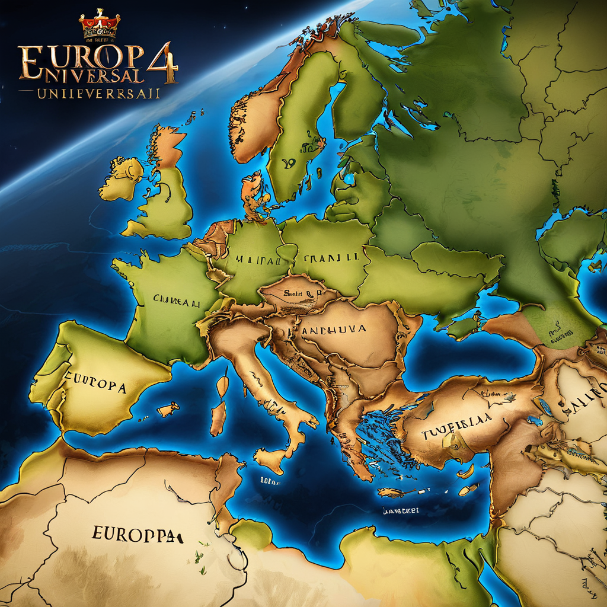
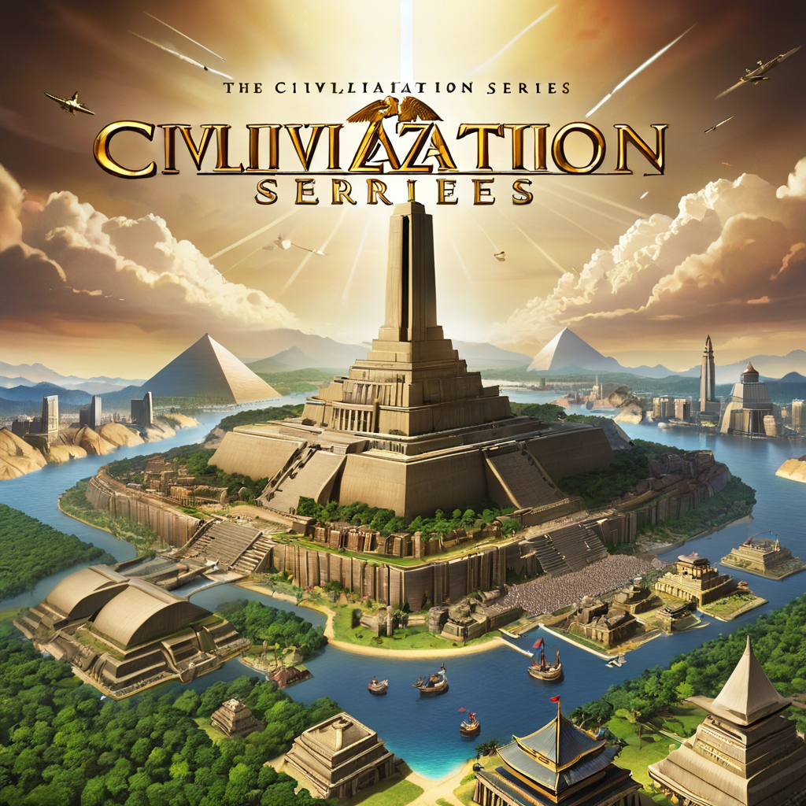
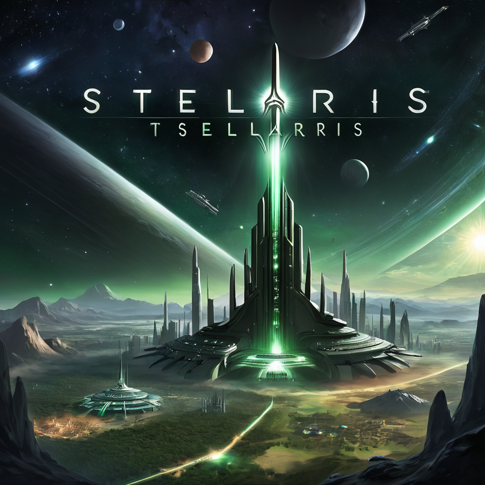
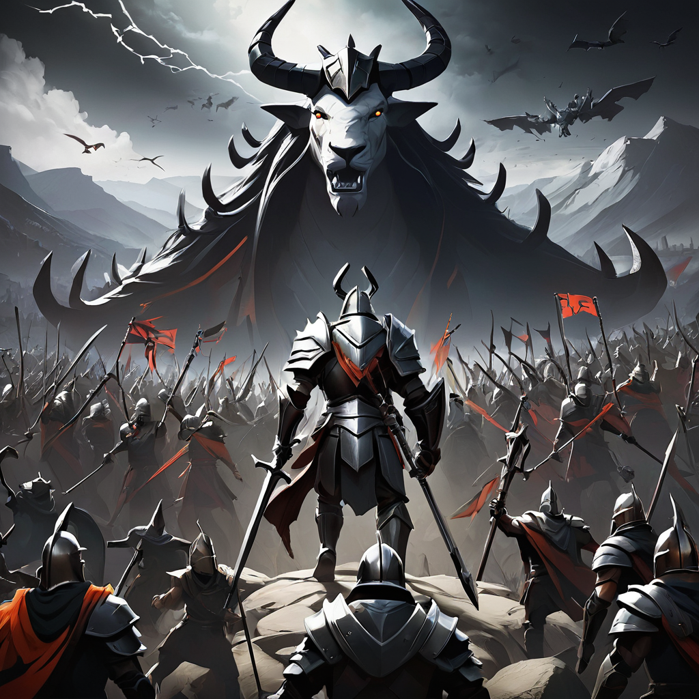
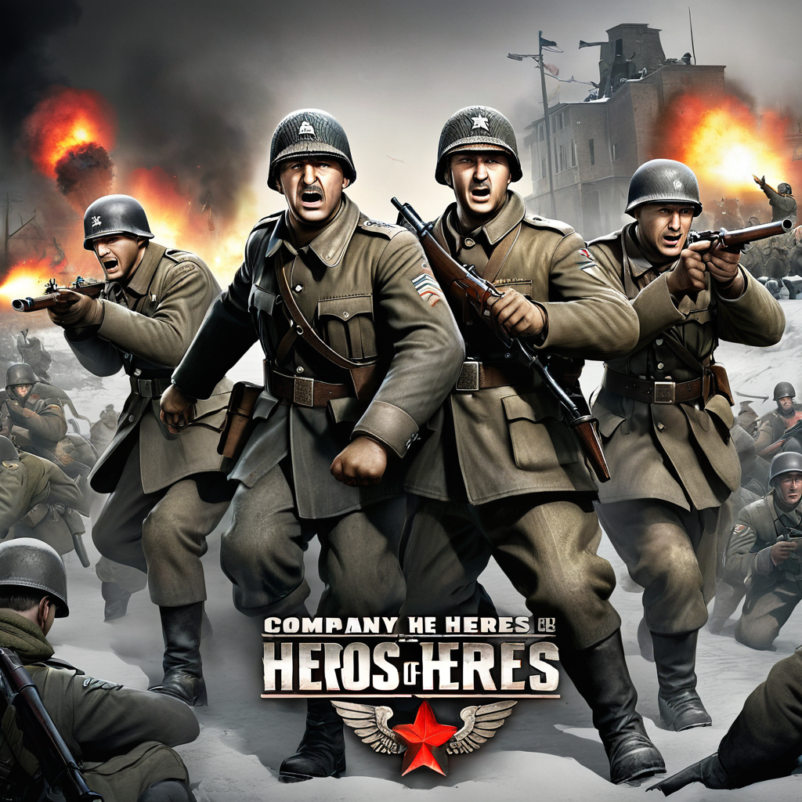
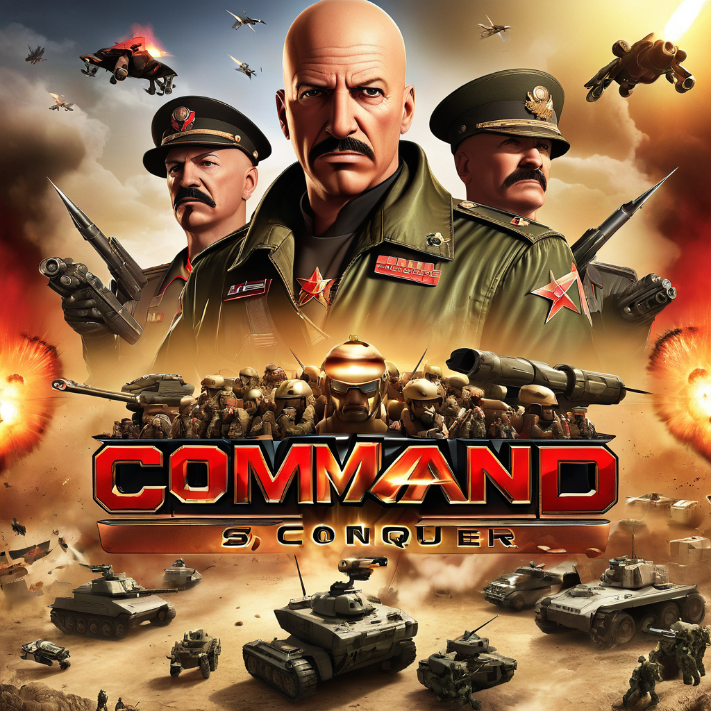
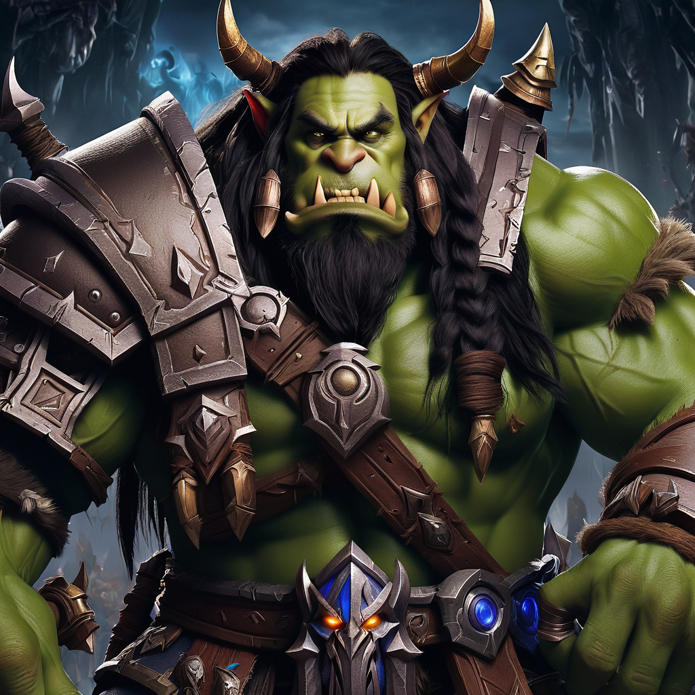
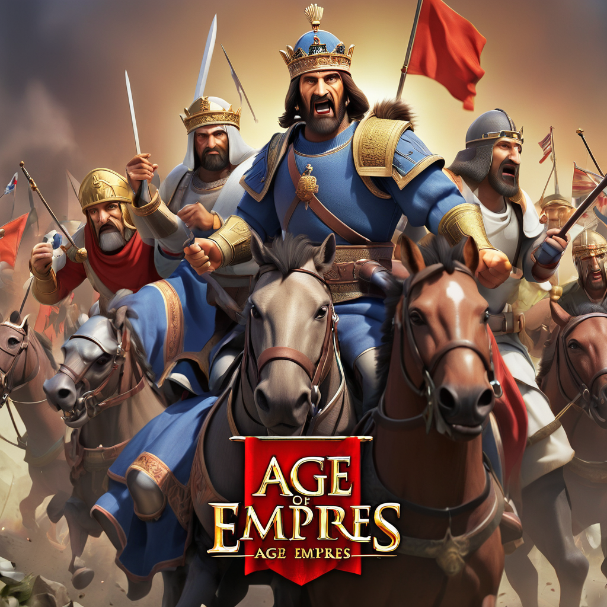
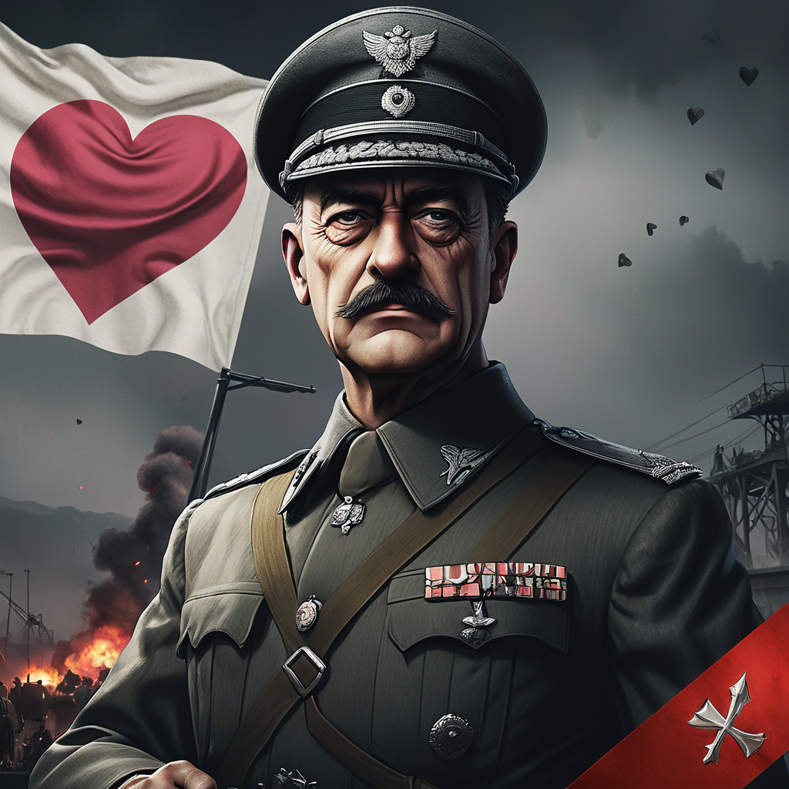

Welcome to Top Tier List of Best Strategy Games on PC.
Strategy games are a genre of video games that emphasize skillful thinking and planning to achieve victory. These games typically involve managing resources, making tactical decisions, and outmaneuvering opponents to achieve specific objectives. Whether it's building and commanding armies, managing cities and civilizations, or leading a team to victory on the battlefield, strategy games offer players a unique and intellectually stimulating gaming experience. There are several reasons why people enjoy playing strategy games. Firstly, they provide a mental challenge that can be both rewarding and satisfying. Players must analyze situations, anticipate their opponents' moves, and devise effective strategies to overcome obstacles and achieve their goals. This aspect of strategy games appeals to those who enjoy problem-solving and critical thinking. Additionally, strategy games often offer a high level of replayability. With various factions, maps, and scenarios to explore, each playthrough can present new challenges and opportunities. This ensures that players can continue to engage with the game long after their initial playthrough, making it a worthwhile investment of their time and effort. What sets strategy games apart is their ability to offer a deep and immersive gaming experience. Whether it's the intricacies of managing an empire in Civilization, the strategic depth of commanding armies in Total War, or the fast-paced decision-making of real-time strategy games like StarCraft, strategy games offer a diverse range of gameplay experiences that cater to different tastes and preferences. In summary, strategy games provide players with a mentally stimulating challenge, offer high replay value, and deliver immersive gaming experiences that set them apart from other genres. Whether you're a seasoned strategist or a newcomer to the genre, there's something special about strategy games that keeps players coming back for more. For this reason, we have compiled the top 10 strategy games that can be played on computers on this site. You can access all of these games on Steam. You can access Steam pages by clicking on the titles.
10) Europa Universalis 4
Europa Universalis IV is a grand strategy game where players take control of a nation and guide it through the centuries to become a dominant global power. With its intricate mechanics and deep historical simulation, Europa Universalis IV offers an immersive experience that challenges players to navigate complex diplomatic, economic, and military systems. Its dynamic gameplay, historical accuracy, and modding capabilities make it a beloved choice for strategy enthusiasts looking to rewrite history.
9)Civilization Series
The Civilization series is renowned for its addictive "one more turn" gameplay, where players lead a civilization from ancient times to the modern era. With its blend of strategy, diplomacy, exploration, and resource management, Civilization offers a compelling experience that allows players to shape the course of human history. Its depth, replayability, and the thrill of building an empire from scratch make it a timeless classic in the strategy genre.
8)Stellaris
Stellaris is a space exploration and empire-building game that offers players the chance to forge their own interstellar civilization. With its customizable species, diverse alien races, and deep strategic gameplay, Stellaris provides a vast sandbox for players to explore, expand, exploit, and exterminate. Its engaging storytelling, complex diplomacy, and innovative mechanics make it a standout title for both strategy veterans and newcomers alike.
7)Endless Legend
Endless Legend combines 4X strategy gameplay with unique fantasy elements to create a rich and immersive experience. Set in the mysterious world of Auriga, players must lead their chosen faction to victory through conquest, diplomacy, and technological advancement. With its gorgeous visuals, diverse factions, and deep lore, Endless Legend offers a refreshing take on the traditional 4X formula, making it a must-play for fans of the genre.
6)Company of Heroes
Company of Heroes is a World War II real-time strategy game that emphasizes tactical combat and strategic thinking. With its dynamic battlefield, destructible environments, and squad-based gameplay, Company of Heroes offers intense and immersive battles that capture the chaos and brutality of war. Its attention to detail, strategic depth, and cinematic presentation make it a standout title in the RTS genre.
5)Command & Conquer
Command & Conquer is a legendary real-time strategy franchise known for its fast-paced gameplay and iconic factions. Whether battling against the Global Defense Initiative or the Brotherhood of Nod, players must gather resources, build bases, and command armies to emerge victorious. With its memorable campaigns, diverse units, and competitive multiplayer, Command & Conquer remains a beloved classic for strategy fans.
4)StarCraft

StarCraft is a groundbreaking real-time strategy game set in a distant future where three unique factions battle for supremacy in the galaxy. With its balanced gameplay, fast-paced action, and strategic depth, StarCraft has become a staple of the esports scene and a beloved title for strategy enthusiasts worldwide. Its compelling storyline, polished mechanics, and competitive multiplayer make it a timeless classic that continues to inspire players and developers alike.
3)Warcraft
Warcraft is a classic real-time strategy franchise set in the high fantasy world of Azeroth, where players command armies of humans, orcs, elves, and more in epic battles for dominance. With its iconic characters, rich lore, and addictive gameplay, Warcraft has left an indelible mark on the RTS genre. Whether playing through the gripping campaigns or competing in multiplayer skirmishes, Warcraft offers an immersive and memorable experience for strategy fans.
2)Age of Empires
Age of Empires is a beloved real-time strategy series that spans various historical periods, from the Stone Age to the Imperial Era. With its emphasis on resource management, city building, and military conquest, Age of Empires offers players the chance to rewrite history and build their own empire. Its accessible gameplay, historical accuracy, and engaging multiplayer modes make it a timeless favorite among strategy enthusiasts.
1)Hearts of Iron 4
Hearts of Iron IV is a grand strategy game set during World War II, where players can take control of any nation and lead it to victory or defeat. With its detailed focus on military, economic, and political aspects of warfare, Hearts of Iron IV offers a deeply immersive experience that allows players to rewrite the course of history. Its extensive modding support, realistic simulation, and strategic depth make it a must-play for history buffs and strategy aficionados alike.